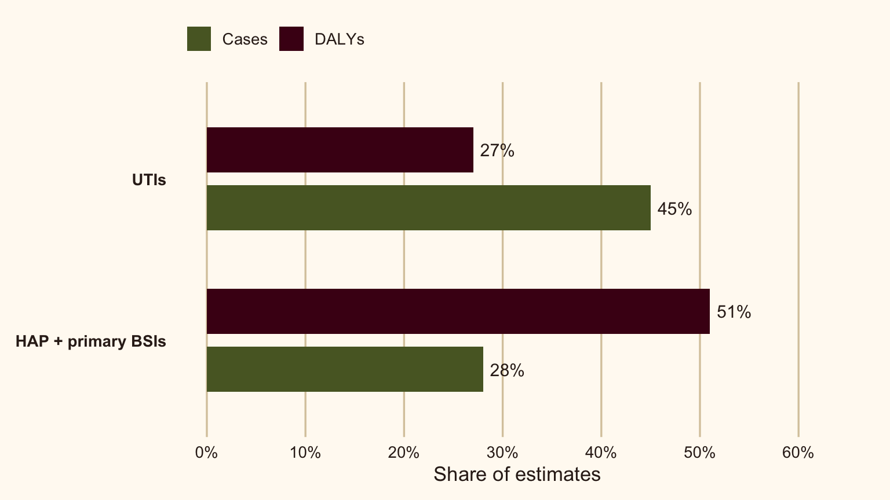

At first glance, Germany’s healthcare-associated infection (HAI) story seems puzzling: hospital prevalence was lower than the European Union/European Economic Area (EU/EEA) average, yet its estimated health burden across the population was higher. How can both be true?
These measures are looking at different things.
Zacher et al. (2019) looked at five selected HAIs. The study used German survey data from 2011 and compared the estimates with EU/EEA data from 2011–2012. Germany’s estimated burden was 308.2 disability-adjusted life years (DALYs) per 100,000 people (95% uncertainty interval [UI]: 221.2–416.3), compared with 290.0 (95% UI: 214.9–376.9) for the EU/EEA. DALYs combine years lived with disability and years of life lost through premature death, capturing health impact as well as case counts.
So this is not a case of one measure being right and the other wrong. Hospital prevalence still matters; it just cannot tell us, on its own, how much health is lost across the wider population.
A hospital snapshot isn’t the whole story
Think of hospital prevalence as a snapshot: it tells us how common HAIs were among the hospital patients surveyed at that moment. It does not tell the whole population-level story.
DALYs capture two kinds of health loss. They account for time lived with disability as well as time lost to early death. This helps explain why a lower hospital prevalence can still come with a higher estimated population burden, since the two measures capture different parts of the health impact.
What do the Germany–EU/EEA numbers show?
Looking across the whole population gives a different view. The estimated rates for all three measures were higher in Germany than in the EU/EEA. The DALY uncertainty intervals overlap, though, so it’s best to describe this as a higher estimate, not a definite difference.
Table 1 compares the estimated burden across Germany and the EU/EEA.
| Estimated burden per 100,000 people | Germany | EU/EEA |
|---|---|---|
| HAIs | 592.1 (521.7–665.8) | 467.9 (456.2–480.2) |
| Attributable deaths | 20.1 (13.4–28.2) | 15.3 (10.2–21.2) |
| DALYs | 308.2 (221.2–416.3) | 290.0 (214.9–376.9) |
Source: Zacher et al. (2019). UI = uncertainty interval.
More cases doesn’t always mean more harm
Here’s another twist: urinary tract infections (UTIs) made up about 45% of estimated cases but 27% of DALYs. Healthcare-associated pneumonia (HAP) and primary bloodstream infections (BSIs) together made up about 28% of cases but 51% of DALYs.
In other words, the infections that happen most often are not necessarily the ones linked to the greatest health loss. Looking at cases alongside severity and premature death gives us a fuller picture.
Figure 1 makes the contrast easy to spot. The bars compare approximate shares for selected infection groups only- not all of the HAIs studied (Zacher et al. 2019).
What hospital teams can take from this
If you work in infection prevention or hospital quality, the question isn’t “Which hospital is worse?” This study uses national estimates; it can’t rank hospitals or tell one facility exactly what to change. A more useful question for your own setting is: which infections are common locally, and which are linked to the greatest harm?
The study offers a useful example: UTIs accounted for more cases, while HAP and primary bloodstream infections made up a larger share of DALYs. That’s a reminder to look beyond counts, rather than treating these results as a ready-made priority list for your hospital.
For a local review, try three steps:
1. Check local patterns
Start with current local surveillance. Which infections are showing up most often?
2. Look beyond case counts
Compare those patterns with severity and patient-outcome information for the same infections.
3. Choose what to investigate
Use your local context to decide what needs closer investigation and which prevention process to review. Keep tracking outcomes over time.
Use the study as a lens for asking better questions, not as a hospital ranking or a prescription for one intervention.
A few important caveats
These are estimates, not a current count. The study covered five selected HAIs and used point-prevalence data from 2011–2012 plus modelling to estimate the wider population burden. So the findings depend on both the survey data and the model assumptions. The uncertainty intervals overlap for deaths and DALYs, too.
Treat the comparison as a way to understand why different measures matter, not as a current benchmark for Germany or for any individual hospital.
The takeaway
So why did lower hospital prevalence not mean a lower burden? Because prevalence is a snapshot of infections in hospitals, while DALYs estimate health lost through illness and early death across the population. In this study, Germany’s estimated DALY rate for five selected HAIs was 308.2 per 100,000, compared with 290.0 in the EU/EEA; but the uncertainty intervals overlap, so the higher estimate is not definitive (Zacher et al. 2019). UTIs accounted for more cases, while HAP and primary BSIs contributed a larger share of DALYs. For infection-prevention teams, the takeaway is simple: consider both how often infections occur and how much harm they cause, then use current local data to decide where to focus.
Note⟡Long story short
Don’t just ask, “How many?” Ask, “How much harm?” For each infection, look at how often it occurs, how severe its outcomes are, and what happens to patients. Compare those patterns with current local surveillance. Then use them together to decide which infections need closer investigation and where prevention efforts may have the greatest impact.
References
Zacher, Benedikt, Sebastian Haller, Niklas Willrich, et al. 2019. “Application of a New Methodology and r Package Reveals a High Burden of Healthcare-Associated Infections in Germany Compared to the Average in the European Union/European Economic Area, 2011 to 2012.” Eurosurveillance 24 (46): 1900135. https://doi.org/10.2807/1560-7917.ES.2019.24.46.1900135.